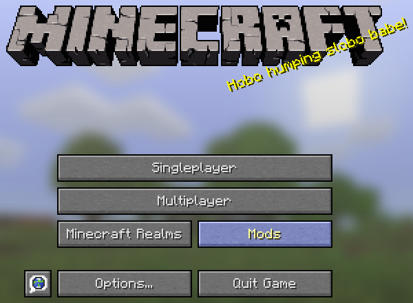
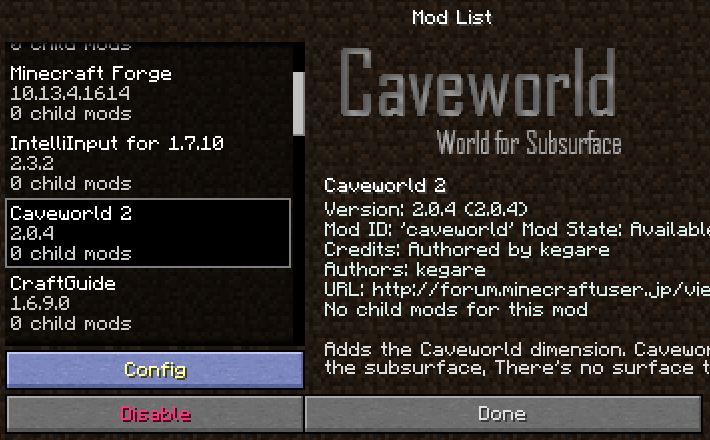

Caveworld 2
2016/01/29更新 : Caveworld 2 が 2.0.4 に更新されました

Caveworld, Cavern の2つのディメンションが追加されます。
また、いくつかの鉱石や便利なアイテム、レシピ、モブやボスも追加されます。
導入方法
このMODは、Java 7以降を要求します。
導入前にJavaのバージョンを確認し、必要に応じてJavaの更新を行ってください。
シングルプレイ
前提MODとして、該当のバージョンのMinecraft Forgeを導入してください。なるべく最新のものを利用されることを推奨します。
- リリースから目的のバージョンのMODファイルをダウンロードします。
- ダウンロードしたjarファイルを、解凍せずにそのままmodsフォルダへドラッグアンドドロップしてください。
- Minecraftを起動し、タイトルのModsボタンをクリックしてMODリストを開き、Caveworldの存在を確認したら導入成功です。
マルチプレイ サーバーに参加して遊ぶ
- 上記手順を参考に、シングルプレイ用に導入しておきます。
- 目的のサーバーへ接続し、ログインできたなら導入成功です。
マルチプレイ サーバーを構築する
前提MODとして、該当のバージョンのMinecraft Forgeを導入してください。なるべく最新のものを利用されることを推奨します。
- リリースから目的のバージョンのMODファイルをダウンロードします。
- ダウンロードしたjarファイルを、解凍せずにそのままmodsフォルダへドラッグアンドドロップしてください。
- Minecraft Serverを起動し、/caveworld コマンドが使用できれば導入成功です。
コンフィグ
コンフィグGUI
Caveworldでは、コンフィグ項目が非常に多く、テキストエディタでは設定が困難なため、コンフィグ設定用のGUIが用意されています。
タイトル画面のModsボタンを押し、MODリスト画面を開きます。

下の方にスクロールし、Caveworld 2を選択します。

- Configボタンを押すと、CaveworldのコンフィグGUIが開きます。
リリース
普通の環境で利用されるユーザーは青いダウンロードボタンからダウンロードしてください。
開発者向けは、MOD製作者のための開発環境用のMODファイルになります。
また、バージョンの後に＋と付いているものは、それ以降のバージョンであれば大丈夫です。
| MOD | バージョン | Minecraft | Forge | |
|---|---|---|---|---|
| Caveworld 2 | 2.0.4 | 1.7.10 | 11.13.4.1558+ | |
| Caveworld 2 | 2.0.3 | 1.7.10 | 11.13.4.1558+ | |
| Caveworld 2 | 2.0.2 | 1.7.10 | 11.13.4.1558+ | |
| Caveworld 2 | 2.0.1 | 1.7.10 | 11.13.4.1558+ | |
| Caveworld 2 | 2.0.0 | 1.7.10 | 11.13.4.1558+ |